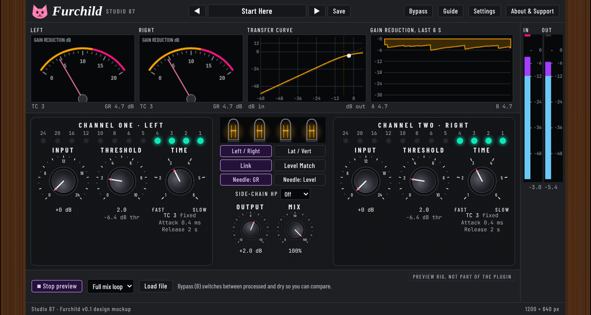

Furchild
A free, open source, cat-themed take on a classic stereo variable-mu tube limiting amplifier (VST3 for Linux, Windows and macOS).

Download
Pre-release test build v0.1.0. Grab the single zip (installers for Windows, macOS and Linux, PDF manual, checksums) from the Releases page. Works offline.
About the warning
The installers are unsigned because code signing certificates cost money every year and this project is free. Windows: More info, Run anyway. macOS: allow it in System Settings, Privacy and Security. Check SHA256SUMS if you like.
Design mockup
The original interactive mockup the plugin was built from.
Furchild
A free, open source, cat-themed take on a classic stereo variable-mu tube limiting amplifier (VST3, Linux first).
Try the mockup
Open the interactive mockup. Press Play for the built-in preview sound; every control has a hover bubble.
Download
Test build v0.1.0 for Linux, Windows and macOS, with installers, uninstallers and the manual (PDF): Releases.
Source
github.com/SpeakingColors/Furchild. AGPL-3.0-or-later. Collects nothing.